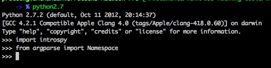
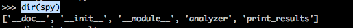
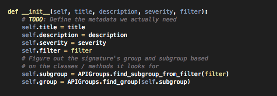

In this article, we will look at how we can Introspy as a python module in our scripts.
The first thing to do is to import the introspy module and Namespace from argparse module.

We then create an instance of the Introspy class. The arguments that we need to provide are the database name, the group name, the subgroup name and the list. Now, for this case, lets provide all the parameters as None except the database path. Introspy will hence include all the groups rather than just including a particular group.
Click to Enlarge
Let’s create an object with a group and a subgroup. Now even though i couldn’t find the different categories of groups and subgroups anywhere in the documentation, but from the HTML reports for Introspy that we generated in the previous articles, i was able to find a list of groups and subgroups. If you look at the image below, all the main menu items can be used as group names whereas all the submenu items can be used as subgroup names.
Click to Enlarge
So for example, the group names can be DataStorage, Crypto, Network, IPC etc and the subgroup name for the group Network can be HTTP. So let’s create an Instrospy object with the group Network and the subgroup HTTP.
Click to Enlarge
Let’s look at all the methods and attributes available to the introspy object.

As we can see the Introspy object has an analyzer attribute. Let’s look at all the methods and attributes for it.
Click to Enlarge
You can see all the findings by either using the findings attribute or using the get_findings method.
Click to Enlarge
We can also look at all the signatures for the analyzer by using the signatures attribute.
Click to Enlarge
However, these are just instances of the signature object. Let’s try and get some meaningful information from these signatures. If we look at the signatures.py file, we will see that every Signature instance has attributes like title, description, filter etc.

So let’s iterate through every Signature object and print out its title and description.
Click to Enlarge
As you can see, we can pretty much find out whatever we want from these instances. In the next case, i have printed out all the class and the methods combinations from the filters for every signature. Please note that this may not be the exact method implementation used by the filter because the method can be a class or an instance method. For e.g, as shown in the output, there is no method like [NSUserDefaults stringForKey:] but there is a instance method [[NSUserDefaults standardUserDefaults] stringForKey:]
Click to Enlarge
Every analyzer object has an attribute named tracedCalls which is a list of all the calls traced during runtime. If we look at the code for tracedCalls class, we will see that it has attributes like callId, method, clazz etc.
Click to Enlarge
We can analyze whatever information we want from any tracedCall. In the image below, i have printed out the attributes for the first traced call.
Click to Enlarge
Conclusion
In this article, we looked at how we can import the introspy module in our own python scripts and fetch different kinds of information like signatures, tracedCalls etc from a generated database file and present them in whichever way we want. This could be used in preparing our own custom reports for the analysis of a particular IOS application. This information can also be fed into other python scripts that can be able to perform further tasks like runtime manipulation etc.
References